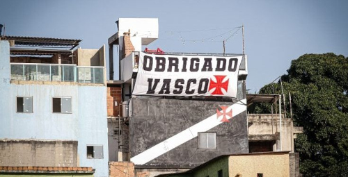

COMO SURGIU O CLUBE DE REGATAS VASCO DA GAMA?
O Club de Regatas Vasco da Gama é uma entidade sócio-poliesportiva brasileira sediada na cidade do Rio de Janeiro, fundada em 21 de agosto de 1898 por um grupo de remadores, inspirados pelas celebrações do quarto centenário da expedição que estabeleceu a primeira rota marítima direta entre a Europa e a Índia, liderada pelo navegador português Vasco da Gama. Embora tenha se originado nas regatas, o clube passou a atuar em diversas modalidades esportivas, como atletismo, basquete, futebol de areia e futebol americano, tendo o futebol como sua principal modalidade. Além disso, é a agremiação brasileira cujos atletas conquistaram o maior número de medalhas em Jogos Olímpicos e Paralímpicos.

A primeira batalha
Em 1923 o Vasco conquistou, logo em seu ano de estreia, o primeiro título da elite do Campeonato Carioca. Porém, em 1924 os clubes da Zona Sul (área de maior prestígio socioeconômico do Rio de Janeiro) uniram-se, deixaram a LMDT e fundaram a Associação Metropolitana de Esportes Athleticos (AMEA). O Vasco somente poderia filiar-se à nova entidade caso dispensasse doze de seus atletas, todos negros, sob a alegação de que exerciam "profissão duvidosa". Diante da exigência, o presidente cruzmaltino José Augusto Prestes enviou uma carta à AMEA recusando-se a aceitar a condição imposta e abrindo mão da filiação.O documento, conhecido como "Resposta Histórica", é considerado um marco na discussão sobre o racismo no futebol brasileiro.

O primeiro titulo internacional do Brasil é do Vasco
O título estadual de 1947 garantiu ao clube um convite para disputar o Campeonato Sul-Americano de Campeões, considerado precursor da Copa Libertadores da América e que chegou a ser reconhecido pela CONMEBOL em momentos diferentes como de igual valor. Após a conquista do torneio, em Santiago, no Chile, em 18 de março de 1948, mais de 200 mil pessoas — cerca de 10% da população do Rio de Janeiro à época — tomaram as ruas da cidade para recepcionar a delegação vascaína, então denominada "Campeões dos Campeões do continente".
Vasco e sua ligação com a sociedade
Nas favelas e periferias, o Vasco se consolidou como um espaço de inclusão e oportunidade. Ao oferecer atividades esportivas gratuitas para crianças e jovens, o clube combate, na prática, a ausência de políticas públicas efetivas que deveriam ser responsabilidade do Estado. Projetos como o “Vasco Social” e iniciativas culturais e educacionais permitem que jovens tenham acesso a alternativas diferentes da lógica da violência e do abandono. Esses projetos cumprem, em escala reduzida, um papel que governos deveriam assumir: garantir acesso universal ao esporte, à cultura e à educação.
